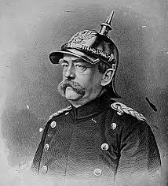
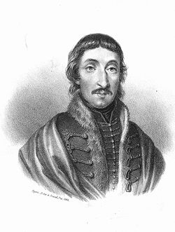
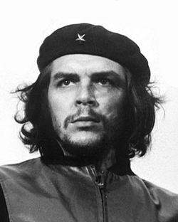
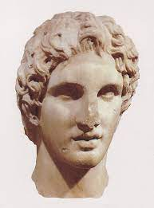
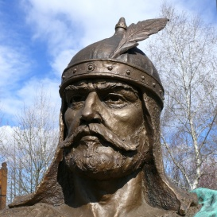

A Proletár Birodalom Fejedelme
A stilusom kicsit kommunista, munkásemberéhez hasonló, őseim a szorgalmas parasztemberek, és a beteljesülésem az igazi harcos szelleme.
Példaképeim:
- Otto Von Bismarck

- Csokonai Vitéz Mihály

- Che Guevara

- Nagy Sándor

- Árpád Fejedelem
